Decks en Azotea
Decks en azotea residenciales y comerciales en toda la ciudad. Desde la planificación estructural hasta materiales ignífugos — construidos según normativa de principio a fin.
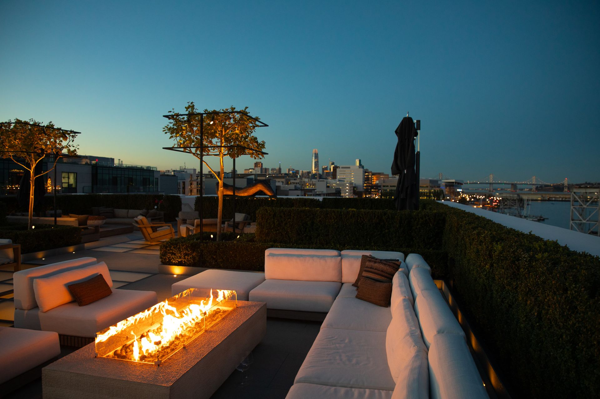
El contratista de espacios exteriores de Punta del Este
La mayoría de los espacios exteriores en la costa parecen pensados a último momento. Como contratista de diseño y construcción especializado en rooftops, patios y espacios de vida exterior, creamos lugares que realmente vas a querer usar — desde el concepto hasta la construcción.
Qué construimos
Desde rooftops hasta patios traseros, ofrecemos una gama completa de servicios de construcción exterior en Punta del Este, La Barra y José Ignacio. Cada proyecto es diseñado y construido en casa por nuestro equipo.
Decks en azotea residenciales y comerciales en toda la ciudad. Desde la planificación estructural hasta materiales ignífugos — construidos según normativa de principio a fin.
Decks de composite y madera dura para casas en Punta del Este y La Barra. Construcciones a nivel de piso, elevadas y en plataforma.
Pérgolas de aluminio y madera para azoteas y patios. Techos de lamas, toldos retráctiles y cerramientos completos.
Paneles de privacidad, cortavientos y cerramientos para equipos de HVAC en azoteas, decks y patios. Opciones en madera, composite y vidrio.
Cocinas exteriores, islas y barras para azoteas y patios. Construcciones a medida y prefabricadas con terminaciones premium.
Jardineras y bancos integrados o independientes para azoteas y decks. Madera, composite y fibra de vidrio, con drenaje e iluminación.
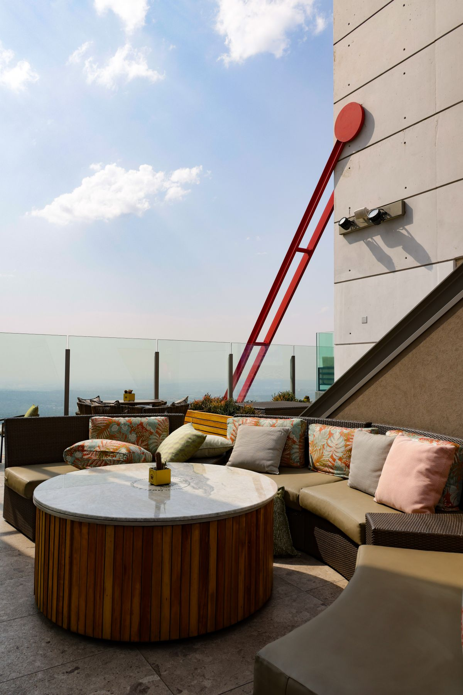
Por qué elegirnos
Como contratista de espacios exteriores en la costa, nos encargamos de todo — desde el diseño inicial hasta la construcción final. Un equipo, un solo contacto. Nuestro enfoque de diseño y construcción integrados mantiene tu rooftop, patio o proyecto de patio trasero en tiempo y presupuesto, sin errores de comunicación entre diseñadores y constructores.
Líneas limpias, materiales premium y cumplimiento normativo total en cada proyecto.
Portfolio
Nuestra galería de trabajos recientes muestra una variedad de espacios exteriores, cada uno adaptado a las necesidades y gustos únicos de nuestros clientes.
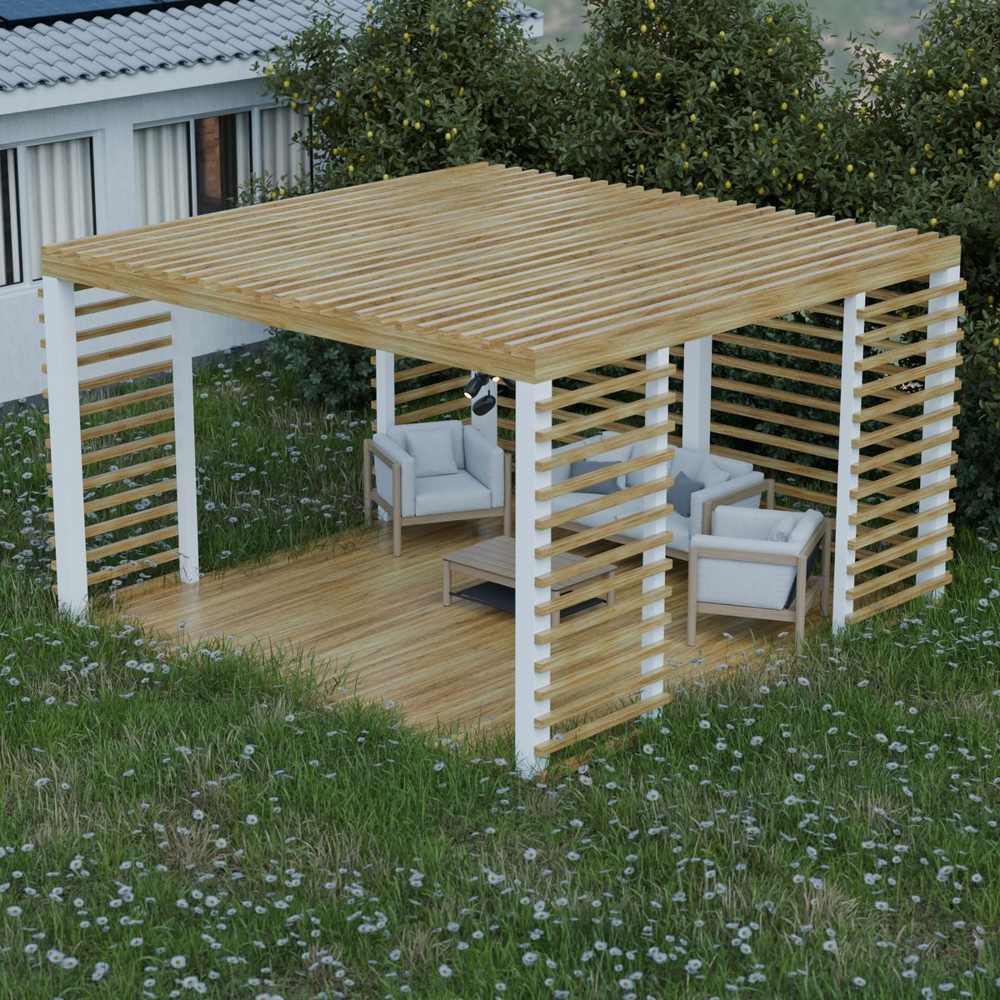
Rooftop moderno con baldosas de deck composite, pérgola de lamas, cocina exterior a gas natural, paneles de privacidad y jardineras con riego inteligente.
Ver proyecto →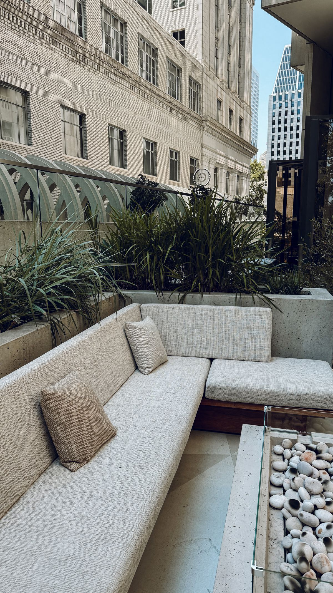
Terraza limpia y moderna en José Ignacio, construida con deck Trex Enhance e iluminación ambiental perimetral, pensada como lienzo en blanco para futuras mejoras.
Ver proyecto →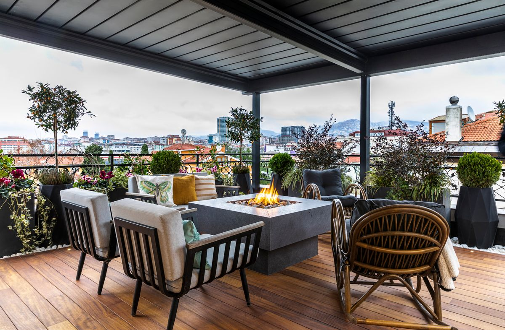
Transformamos esta terraza en un espacio moderno para relajarse y reunirse: adoquines de porcelanato, fogón a medida y asientos cómodos con vista al mar.
Ver proyecto →Espacio exterior moderno pensado para cenas familiares y reuniones pequeñas, con asientos a medida y una barra de esquina prolija.
Ver proyecto →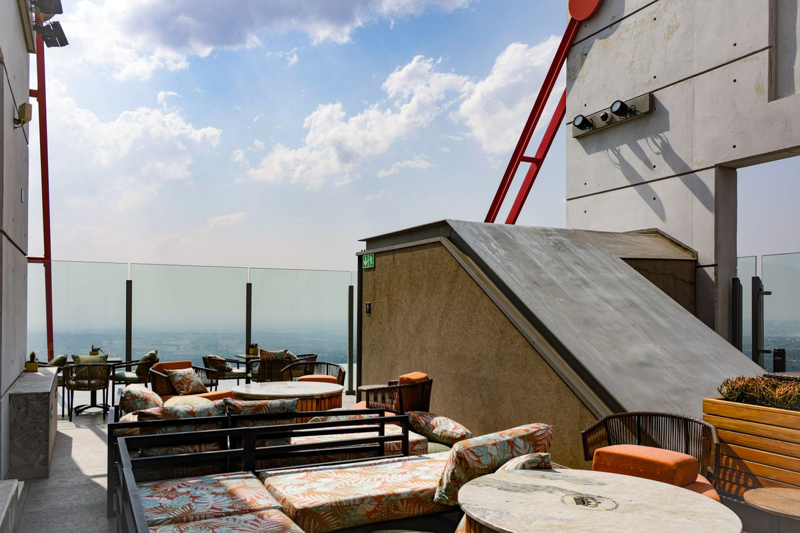
Terraza compartida con adoquines de hormigón, cocina exterior a medida y pérgola de madera — un espacio funcional y con estilo para todo el edificio.
Ver proyecto →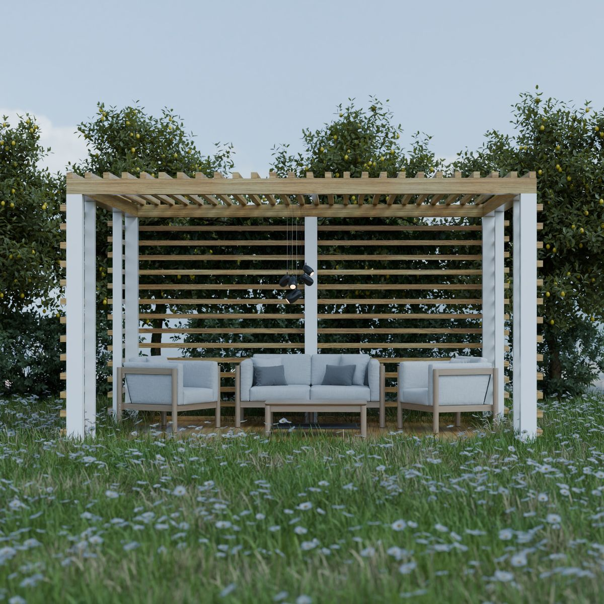
Sacamos un viejo sunroom y construimos un deck de composite con pérgola de lamas, barandas negras, iluminación integrada y jardinera a medida.
Ver proyecto →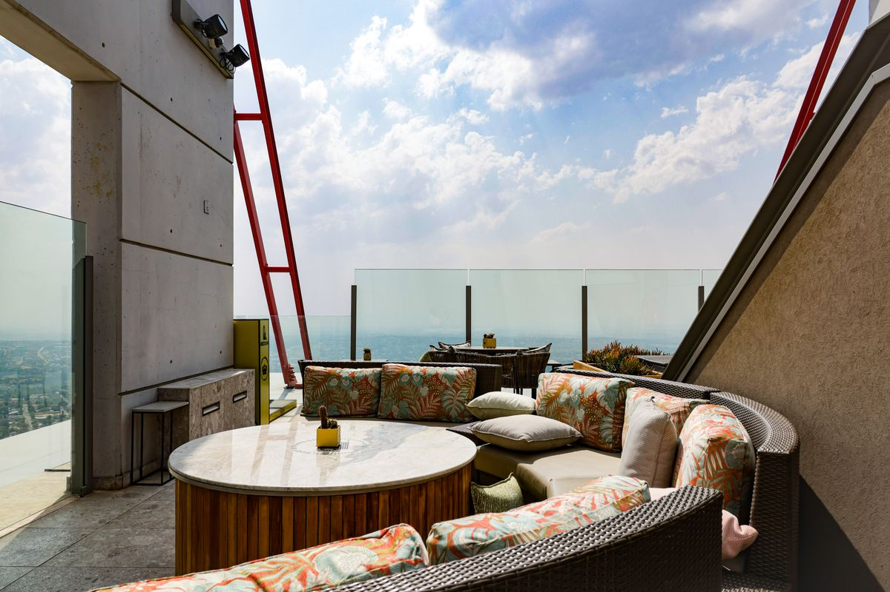
Pensada para acompañar la arquitectura de la casa: deck Trex a medida, barandas de vidrio sin marco, fogón y un muelle propio de 24 metros.
Ver proyecto →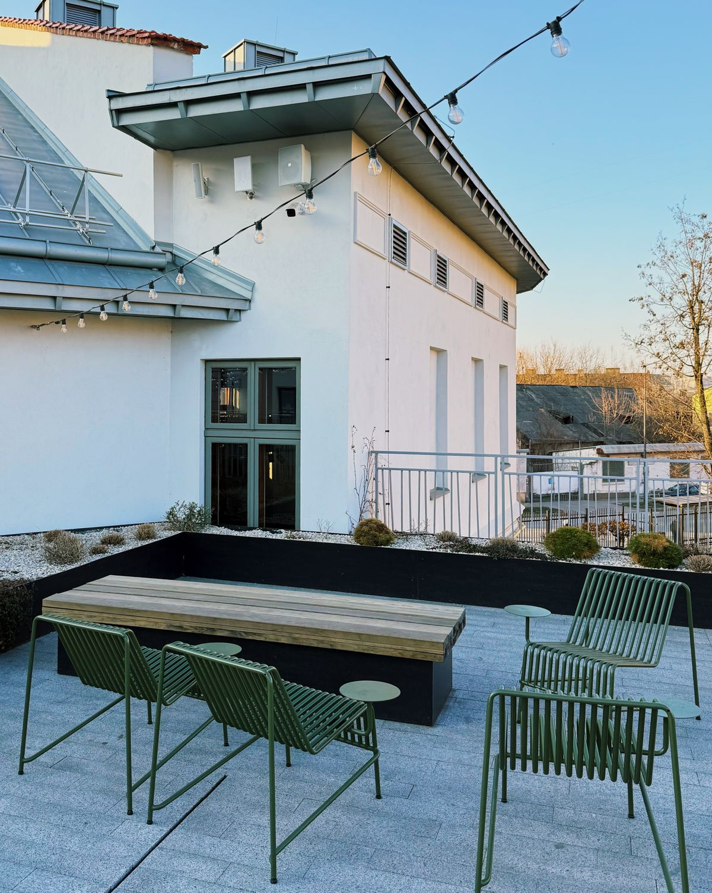
Renovación que transformó un viejo deck de madera en un espacio vibrante, con vegetación exuberante, adoquines y riego inteligente.
Ver proyecto →Listos cuando vos lo estés
¿Querés trabajar con un contratista de espacios exteriores que se encarga de todo, desde el diseño hasta la construcción? Pedí un presupuesto gratis para tu rooftop, patio o espacio exterior en Punta del Este.
cotizaciones@nordhausoutdoor.comArrancamos con una visita al lugar y una consulta de diseño para entender tu visión del espacio. Creamos renders 3D para que veas tu rooftop, patio o espacio exterior antes de empezar la obra.
Vas a recibir un presupuesto detallado con un desglose claro de materiales, mano de obra y permisos. Revisamos los tiempos y fijamos expectativas realistas.
Nuestra cuadrilla maneja cada etapa en casa — estructura, deck, terminaciones e inspección final. Un solo equipo de principio a fin, construido según normativa.
Testimonios
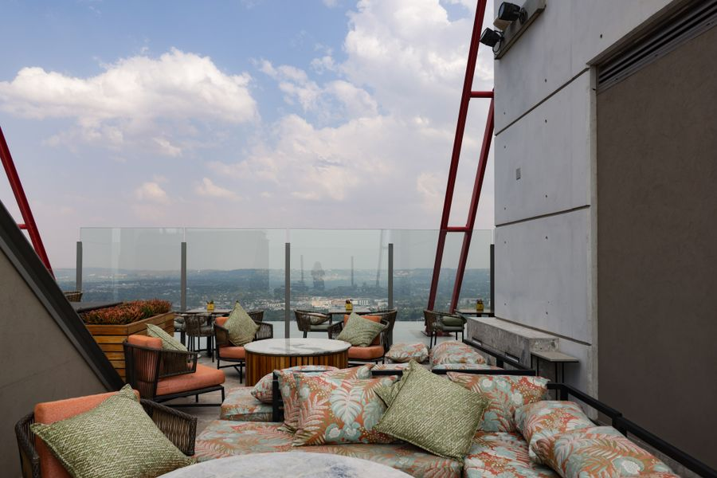
Calidad excepcional y atención al detalle
«Nordhaus superó nuestras expectativas, desde el diseño hasta la construcción. El equipo entregó un deck hermoso y a tiempo. ¡Totalmente recomendable!»
Robert M. — La Barra, Punta del Este
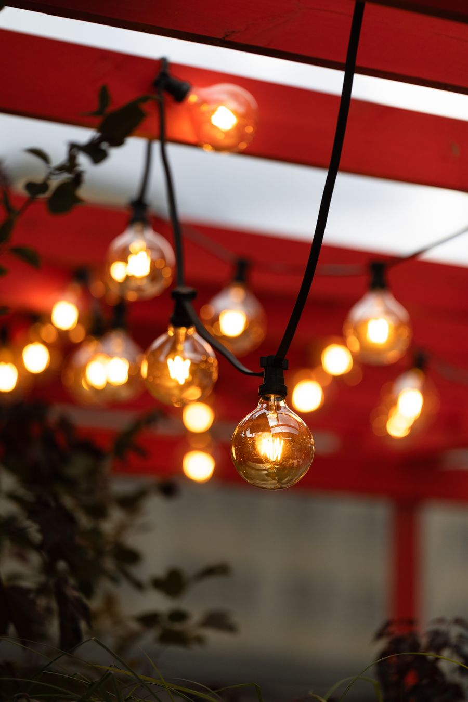
Transparentes, flexibles y un trabajo excelente
«Nordhaus dio presupuestos precisos, comunicación clara y una gestión de proyecto de primer nivel. Fueron flexibles y terminaron nuestro deck a la perfección.»
Dominick L. — José Ignacio
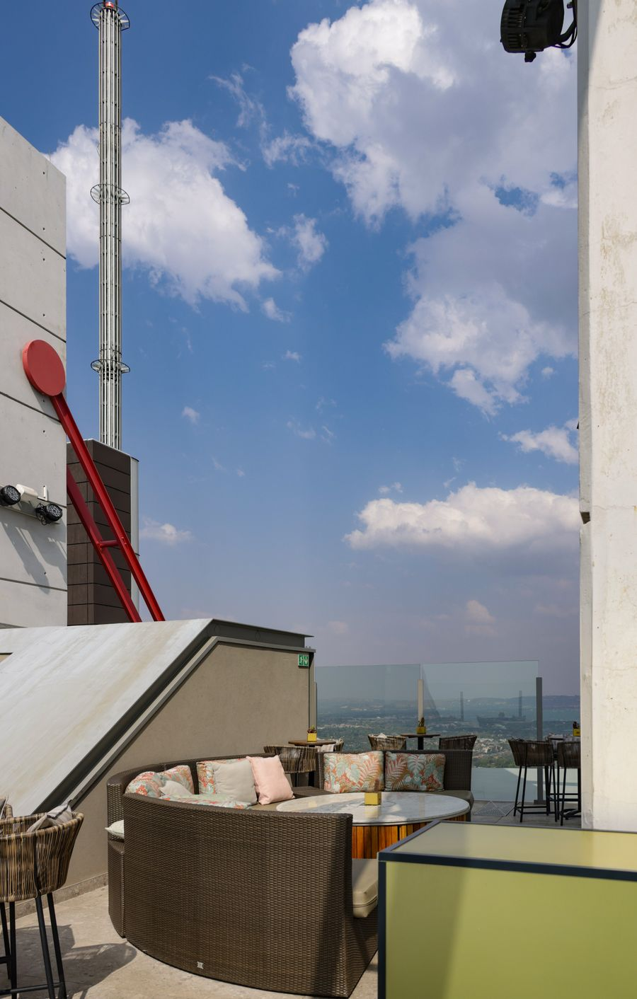
Encantados con nuestro hermoso porche nuevo
«Nordhaus entregó un deck Trex impecable, con precisión y cuidado. El equipo fue profesional, capacitado y un placer para trabajar.»
Aleksandra O. — Playa Brava, Punta del Este